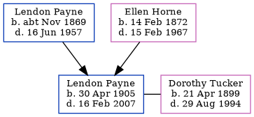

Lendon Harrison Payne 1905 - 2007
[ Home ] | [ Calendar ] | [ Surnames Index ] | [ Family History ]An assistant librarian and the son of Lendon Payne (a postman) and Ellen HorneLendon Payne, the first cousin twice-removed on the father's side of Nigel Horne, was born in Wellingborough, Northamptonshire, England on Apr 30, 19051,2,3. He married Dorothy Tucker (a bank clerk) in Hampstead, London, England around May 19335.
Throughout his life, he lived at 71 Grange Road, Margate, Kent, England on Apr 2, 19117; and at 135 Eastcote Road, Ruislip, London in 19356 and on Sep 29, 19391.
He died on Feb 16, 2007 in Worthing, West Sussex, England3,4.
Parents
- Lendon Goodwin was born c. Nov 1869
- Ellen Mary Ann was born on Feb 14, 1872
Citations
- 1939 Register - Findmypast (was recorded at this address)
- England & Wales births 1837-2006 - Findmypast
- United Kingdom Deaths - Findmypast
- England & Wales Government Probate Death Index 1858-2019 - Findmypast
- England & Wales Marriages 1837-2005 - Findmypast
- London, England, Electoral Registers, 1832-1965 Ancestry.com Operations, Inc.
- 1911 Census for England & Wales - Findmypast (was age 5 and the son of the head of the household)
Media
England & Wales births 1837-2006 - BMD/B/1905/2/AZ/000461/359
1911 Census for England & Wales - GBC/1911/RG14/04489/0513/6
England & Wales marriages 1837-2005 Transcription - BMD-M-1933-2-AZ-000967-102
1939 Register - TNA-R39-0871-0871E-013-16
United Kingdom Deaths - BMD-D-MILLEN-002881283
United Kingdom Deaths - BMD-D-MILLEN-003507327
England & Wales Government Probate Death Index 1858-2019 - GBOR-GOVPROBATE-B-2007-2008-00085295
Family Tree
Generated by ged2site. Last updated on Nov 13, 2024